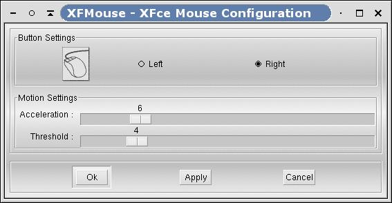

Figure 6-6. XFMouse
XFMouse is the mouse configurator. Thanks to XFMouse, you can change the mouse button mapping and other parameters.
Select Left or Right if you are left or right handed. If you select "Left", logical button 1 will be mapped on physical button 3 and logical button 3 will be mapped on physical button 1. Button 2 (middle) is kept unchanged. Note that this setting is global to the X server and will affect all applications running on the screen.
"Acceleration" determines how many pixels to move the cursor based on how much the physical pointer moved.
"Threshold" specifies how many pixels the physical pointer must have to move for "acceleration" to take effect.